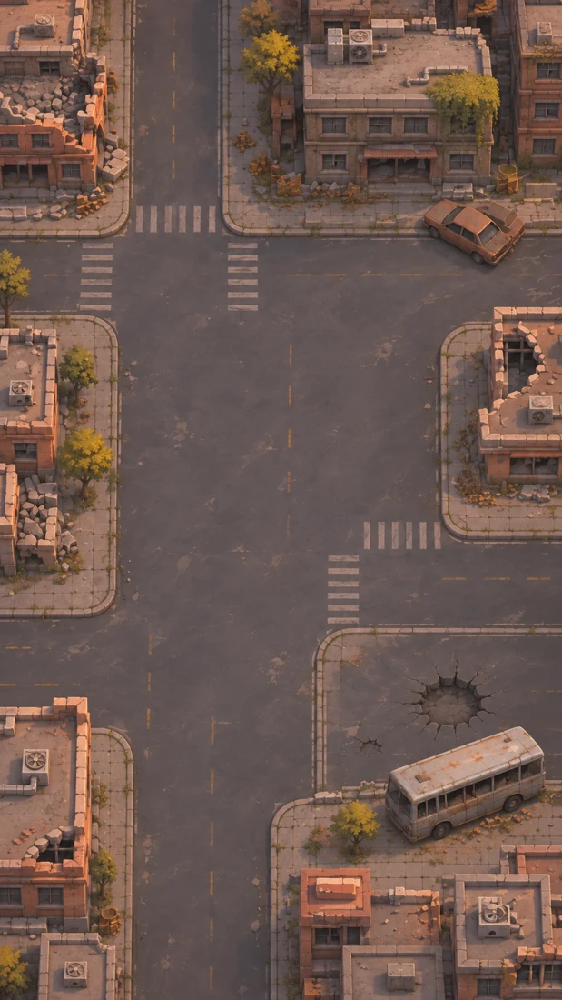

战斗角色与装备
俯视战斗里，单个角色在竖屏画面中占的面积很小，轮廓和色彩决定了能不能快速认出对象。白发给主角留下醒目的特征，灰褐色敌人用不同的体形和主角区分，装备上的蓝色灯带则勾出关键结构。三种设计各有识别点，让观众能更快读懂交战画面。
以俯视角战斗画面展示游戏玩法。
点击图片放大查看
俯视战斗里，单个角色在竖屏画面中占的面积很小，轮廓和色彩决定了能不能快速认出对象。白发给主角留下醒目的特征，灰褐色敌人用不同的体形和主角区分，装备上的蓝色灯带则勾出关键结构。三种设计各有识别点，让观众能更快读懂交战画面。
以十字路口组织俯视画面，用建筑勾出街区边缘，把车辆和废墟集中在道路两侧，让视线顺着道路落到路口中央。观众能先看清战斗发生的位置，再从路边细节读出街区的破败感。中央留出的空间也让角色走位和交战动作更容易被看见。
